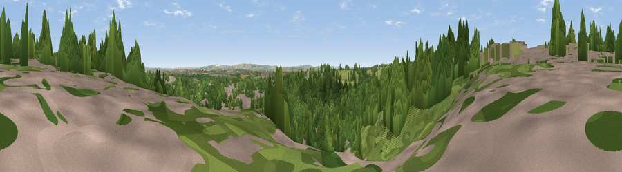

Viewpoint near Bradford on Avon
#30303 in England · top 55% of its area beats it · near Bradford on AvonWhere it is
The exact computed spot (ST 82225 60975). Click the marker for map links.
The view, rendered

A 360° render of this exact spot computed from the terrain model, tree cover and land cover — summer colours, afternoon light, calibrated against photographs of famous viewpoints. Real trees, hedges and buildings will differ in detail.
The panorama
Grey silhouette: terrain skyline in each direction (720 bearings, Earth curvature and refraction included). Dashed green: skyline with trees (+15 m) and buildings (+8 m) as obstacles. Blue strip: how far the ground is visible on each bearing.
Where the view opens
Wedge length = distance to the farthest visible ground on that bearing (vegetation-aware). Rings at 10, 25 and 50 km.
What fills the view
61% woodland · 23% built-up · 14% grassland · 2% cropland
Angular shares of the visible panorama (visual magnitude), not map area. Landscape diversity 0.43 (0–1 Shannon).
Key numbers
More beautiful places nearby
The staircase of upgrades: each row has a higher view potential than everything closer. Driving times are estimates from straight-line distance, calibrated against real road routing — check an actual route before setting out.
| Place | Direction | Drive | Score |
|---|---|---|---|
| Viewpoint near Westwood | SW · 2 km | ~5 min | 45.7 |
| Viewpoint near Winsley | WSW · 2 km | ~5 min | 46.3 |
| Viewpoint near Monkton Farleigh | NW · 4 km | ~9 min | 49.0 |
| Viewpoint near Limpley Stoke | W · 5 km | ~11 min | 60.8 |
| Viewpoint near Bathford | NNW · 6 km | ~13 min | 64.0 |
| Viewpoint near Combe Hay | W · 10 km | ~19 min | 66.1 |
| Viewpoint near Inglesbatch | W · 11 km | ~21 min | 68.8 |
| Viewpoint near Bratton | SE · 12 km | ~23 min | 73.2 |
51.34757, -2.25661 · source: screening · position refined by local search. Computed location — check access rights before visiting.